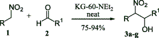
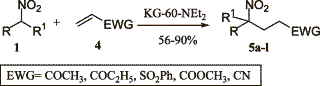

KG-60-NEt2 as Henry reaction catalystFrom GC_MS, HTML by metanoid[ Back to the Chemistry Archive ] The following article might be interesting for some bees. It also includes the procedure to make the catalyst and references to several other interesting articles (interesting in the meaning of Henry reaction catalysts). Use of heterogeneous catalyst KG-60-NEt2 in Michael and Henry reactions involving nitroalkanes Tetrahedron Letters 44 (2003) 2271-2273 Abstract The N,N-diethylpropylamine supported on amorphous silica (KG-60-NEt2) catalyses the formation of carbon_carbon bonds by nitroalkanes through both the nitroaldol (Henry) and Michael reactions. The catalyst shows general utility with a variety of electrophilic acceptors. Moreover, the catalyst can be reused for two further cycles without loss of the activity. Article Nitroalkanes are very important starting materials in the formation of carbon-carbon bond. The nitronate anion can react under basic conditions with saturated carbonyl compounds or with electron poor alkenes leading to the nitroaldol (Henry) reaction or to the Michael reaction, respectively, with the formation of di- or polyfunctionalized nitroderivatives.15 The most commonly applied protocols to perform the above reactions require the use of basic catalysts under both homogeneous and heterogeneous conditions.5 Due to the great applicability of the Henry6 and the Michael5 reactions involving nitroalkanes, both these transformations were developed extensively, even under sonication7 or high pressure,8 and, although each of these methodologies has been widely studied, very often these suffer different drawbacks such as: (i, for the Henry reaction) low yields, retroaldol reaction, the formation of side products by the aldol condensation and Cannizzaro reaction of aldehyde or olefin formation; (ii, for the Michael reaction) low yields, the efficiency with a restricted class of electrophilic olefins, the need of ultrasound, and/or the demand of a large excess of nitro compound that, for valuable nitro derivatives, is a serious economic drawback. Consequently, the development of a new general, efficient catalyst for the title reactions is welcomed, especially a new heterogeneous one. Unfortunately, as clearly stated in recent reviews and reports, the classical synthetic routes are responsible for the production of large amounts of pollutant by-products.9 This drawback can be partly overcome by replacing stoichiometric processes with cleaner catalytic alternatives.10 Moreover, a further step toward environmentally friendly synthetic routes is represented by the application of solid catalysts 11 and by the development of solventless processes.12 In connection with our interest in the application of heterogeneous catalysis for fine chemicals preparation 13 with particular interest in the organicinorganic hybrid materials,14 we planned to find a new heterogeneous catalyst able to promote both (i) the Henry reaction and (ii) the Michael reaction of nitroalkanes to electron-poor alkenes under solventless conditions. To this end we tested different heterogeneous catalysts and, after several trials, we found that KG-60-NEt2 produced good results for both reactions. As shown in Table 1, alfa-nitroalcohols 3 (Scheme 1) are produced in good to excellent yields; it should be noted that the very mild reaction conditions prevent typical side reactions such as the retro-aldol reaction 5,6 or the dehydration of the 2-nitro alcohol into nitroalkene.15 The present method affords a diastereomeric mixture of nitroalkanols according to the most part of the reported procedures; this seems not to be a problem since the main uses are the conversion into alfa-nitro ketones 2,3,5,16 or conjugated nitroalkenes,5,17 in which at least one stereogenic centre is lost. Synthetic results of conjugate addition of nitroalkanes to electron-poor olefins are reported in Table 2. A wide range of nitroalkanes and electron poor olefins underwent Michael addition by this procedure affording products 5 (Scheme 2) in good to excellent yield. The different reactivity is obviously ascribable to the different activation of the electron-poor carbon-carbon double bond.18 Concerning the role played by the catalyst, as expected a possible diffusion effect into the pores of the catalyst is excluded due to the fact that the KG-60 silica is a macroporous material (pore distribution: 60-100 nm). Finally, we faced the problem of catalyst recycling: at the end of the model reaction between 1-nitropropane and methyl vinyl ketone, the catalyst was filtered on a Buechner funnel, washed with dichloromethane, dried under vacuum and reused. The catalyst could be utilized with similar results for at least two further cycles (reaction: 80%; 1st recycle 78%; 2nd recycle: 79%). In conclusion we have shown the utilization of KG-60-NEt2 as solid and reusable, solventless, catalyst in the formation of the carbon-carbon bond through nitroalkanes via the Henry and Michael reactions. It is noteworthy that the catalyst shows general applicability and good efficiency with all substrates utilized in both reactions. Preparation of KG-60-NEt2:The preparation of silica supported N,N-diethylpropylamine was performed following a modification of a procedure reported in the literature.19The KG-60 (5 g) was treated with N,N-diethyl-3-aminopropyltrimethoxysilane (45 mmol, 7.9 mL) in dry toluene (75 mL) at reflux for 24 h. After cooling, the mixture was filtered on a Buechner funnel and the solid washed with a Soxhlet apparatus for 16 h with a mixture of dichloromethane/diethyl ether 1/1. Characteristics of KG-60-NEt2 are the following: loading=0.99 mmol/g, surface area=309 m2/g, pore total volume=0.15 cm3/g, pore distribution 50-100 nm. Typical procedure (Henry reaction) for the formation of 3g: Nitroethane (157 mg, 2.1 mmol) was mixed with the hydrocinnamaldehyde (262 mg, 2.1 mmol), then, the catalyst KG-60-NEt2 (0.21 g) was added. After standing (stirring can be avoided since it does not change the efficiency of the reaction) at room temperature for the appropriate time (see Table 1) the mixture was extracted with EtOAc (5�20 mL), the catalyst was filtered off, the organic layer was evaporated and the crude product was purified by flash chromatography (cyclohexane/EtOAc, 7:3) giving 336 mg (80%) of the pure 3g. Typical procedure (Michael reaction) for the formation of 5b: 1-Nitropropane [187 mg, 2.1 mmol, (4.2 mmol when the starting nitroalkane is nitroethane)] was mixed with methyl vinyl ketone (122 mg, 2.1 mmol), then, the catalyst KG-60-NEt2 (0.42 g) was added. After standing (stirring can be avoided since it does not change the efficiency of the reaction) at room temperature for the appropriate time (see Table 1) the mixture was extracted with EtOAc (5�20 mL), the catalyst was filtered off, the organic layer was evaporated and the crude product was purified by flash chromatography (cyclohexane/EtOAc, 8:2), affording 247 mg (80%) of the pure 5b. Table 1.
(a) Selected to avoid by-products formation. (b) Yield of pure isolated product. Table 2.
References [1]Seebach, D.; Colvin, E. W.; Leher, F.; Weller, F.; Weller, T. Chimia (1979), 33, 118.
|